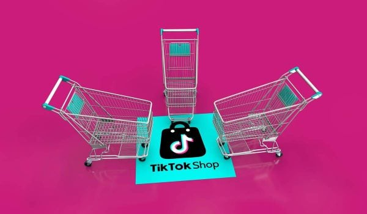

TikTok Shop dépasse les 50 milliards de dollars de vente et ce ne sont plus les jeunes qui achètent le plus

🛒 En lien avec cet article
Publicité — Liens de partenariat Amazon : une commission peut être reversée, sans surcoût pour vous.
🔥 Top produits tech du moment
Publicité — Liens de partenariat Amazon : une commission peut être reversée, sans surcoût pour vous.
L'intelligence artificielle continue de transformer en profondeur notre quotidien et l'économie. Cette annonce s'inscrit dans une dynamique où les grands acteurs accélèrent leurs investissements et leurs lancements.
Ce qu'il faut retenir
TikTok Shop vient de franchir un cap.
En effet, au premier semestre 2026, la plateforme a généré pas moins de 50,3 milliards de dollars via sa boutique soit près du double par rapport à l’année passée, sur la même période.
Cette croissance fulgurante ne serait pas due aux adolescents de la génération Z mais viendrait […]
Pourquoi c'est important
Cette information marque une nouvelle étape dans le développement de l'intelligence artificielle. Elle concerne directement les utilisateurs de technologies numériques et mérite d'être suivie de près dans les prochaines semaines. TikTok Shop dépasse les 50 milliards de dollars de vente et ce ne sont plus les jeunes qui achètent le plus est ainsi un signal à prendre en compte pour comprendre les évolutions du secteur.
En résumé
Retenez l'essentiel : TikTok Shop dépasse les 50 milliards de dollars de vente et ce ne sont plus les jeunes qui achètent le plus. Cette actualité a été rapportée par Siecle Digital. Nous continuerons de suivre ce sujet et de vous tenir informés des prochaines évolutions.
🚀 Vous êtes freelance tech ?
Calculez votre TJM en 30 secondes : micro-entreprise, SASU, EURL ou portage salarial. Gratuit, taux 2025.
Calculer mon TJM →Source : Siecle Digital